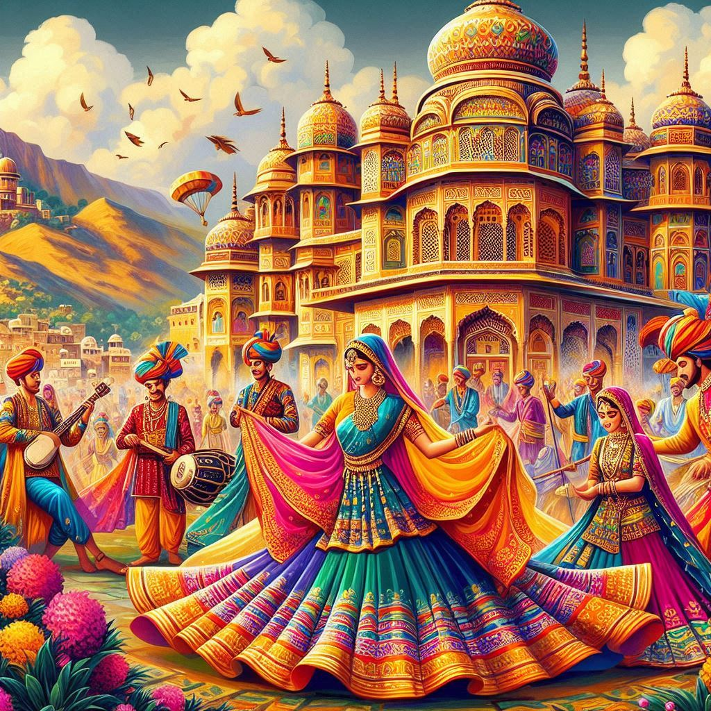
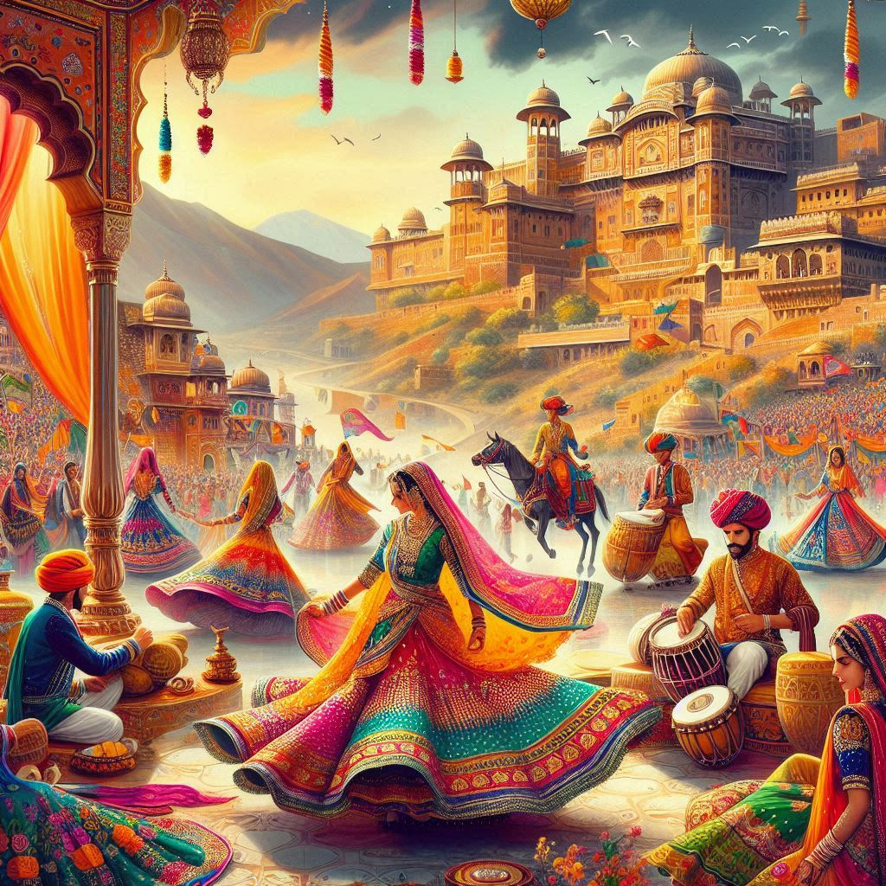

Culture of Rajasthan
Rajasthan, the "Land of Kings," is renowned for its vibrant and diverse culture, shaped by its historical grandeur, arid geography, and the influence of various dynasties, including the Rajputs. It is a mosaic of colorful traditions, music, art, architecture, and festivals that reflect the state's rich heritage.
1. Art and Craft
- Textiles and Handicrafts: Rajasthan is famous for its intricate handicrafts, including Bandhani (tie-dye), Leheriya (wave pattern), and block-printed fabrics. The state's colorful turbans and dupattas are iconic.
- Pottery and Sculptures: Jaipur’s blue pottery and terracotta art are significant, while carved stone sculptures adorn temples and palaces.
- Jewelry: Rajasthan is renowned for its traditional jewelry, including Kundan, Meenakari, and Polki designs, which showcase fine craftsmanship.
2. Music and Dance
- Music: Folk music, like Maand, Pabuji Ki Phach, and Panihari, tells tales of heroism and romance. Instruments like the dholak, sarangi, and ektara accompany these soulful melodies.
- Dance: Traditional dances like Ghoomar (performed by women in swirling skirts), Kalbeliya (serpentine movements by the Kalbeliya community), and Bhavai (balancing pots while dancing) highlight the state's rhythm and grace.
3. Architecture
Rajasthan's architectural heritage is a blend of Rajput, Mughal, and Jain styles, evident in:
- Forts and Palaces: Majestic structures like the Amer Fort, Mehrangarh Fort, and City Palace are a testament to the state's royal history.
- Temples: Jain temples at Ranakpur and Dilwara are architectural masterpieces.
- Havelis: Ornate mansions like the Patwon Ki Haveli in Jaisalmer reflect intricate craftsmanship.
4. Festivals
- Pushkar Camel Fair: A unique cultural event combining livestock trading and vibrant festivities.
- Desert Festival: Celebrated in Jaisalmer with camel races, folk performances, and traditional sports.
- Teej and Gangaur: These festivals honor goddess Parvati, marked by colorful processions and rituals.


5. Cuisine
- Signature Dishes: Dal Baati Churma, Gatte Ki Sabzi, and Ker Sangri represent the state’s culinary richness.
- Sweets: Ghewar and Malpua are popular desserts.
6. Traditions and Customs
- Rituals and Worship: Rajasthan follows a mix of Hindu, Jain, and folk traditions, with an emphasis on nature worship.
- Costumes: The state’s attire is vibrant and functional, with women wearing ghagras (long skirts) and men donning turbans.
7. Community Life
Rajasthan’s society is community-driven, with different castes and tribes contributing to its unique identity. The Bhil, Meena, and Garasia tribes have distinct customs and practices.
Conclusion
Rajasthan’s culture is a captivating blend of royal traditions, colorful celebrations, and artistic brilliance. It is a treasure trove of heritage that continues to fascinate visitors and preserve India’s rich cultural diversity.